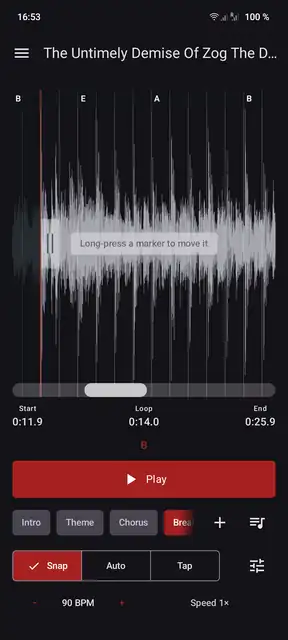
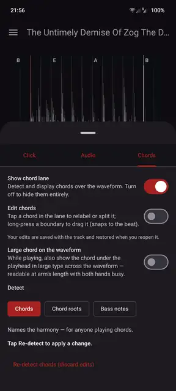

Rubber Ring
صوت وفيديو وموسيقى
Rubber Ring is a tool for practicing song parts. Pick an audio file, mark a start/stop region on its waveform, and play it back in a seamless, gapless loop. It auto-detects tempo and beats to snap the loop markers to a beat grid, with full manual override. Early-stage release — expect rough edges. F
✓ ترخيص مفتوح (GPL-3.0-only) · آخر تحديث: 2026-10-22
0.14الإصدار
13.2 MBالحجم
GPL-3.0-onlyالرخصة
Open in Kanzتحميل APK (13.2 MB)
Download APK
SHA-256: d3b470511327cadabdd9fd827449c6a8a3334414e610394e6a10998aa9ffb134


تطبيقات تانية لنفس المطوّر (4)
More apps from this developer: de.singular
امسح الكود لفتح صفحة التطبيق
Scan to open this app page
لو كنز مش متثبت عندك: نزّل متجر كنز.
Not installed? Get the Kanz store.